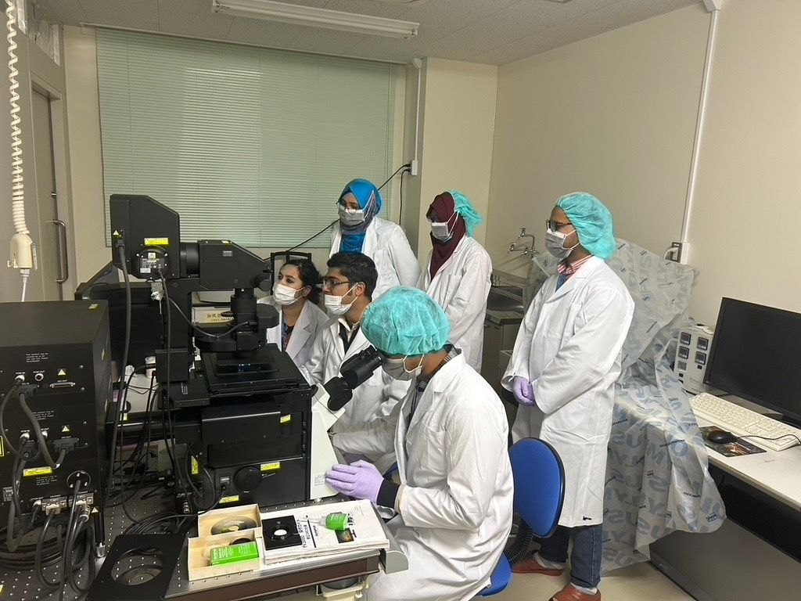

DVM · MS in Medicine · Veterinary Researcher
Research Assistant, Population Medicine & AMR Laboratory
Department of Medicine, Bangladesh Agricultural University
BVC Reg. No.: 10722

I trained as a veterinarian at Bangladesh Agricultural University and moved into research through an MS in Medicine, working in the Population Medicine and AMR Laboratory since February 2023.
My thesis detects and characterises carbapenem-resistant Acinetobacter baumannii across veterinary hospitals, pet animals, and hospital waste — tracing phenotypic and genotypic resistance back to possible sources of persistence. I wrote and secured the National Science and Technology Fellowship (2025) independently to fund this work.
Alongside the thesis, I've run large field studies on Lumpy Skin Disease economics (455 farms, 16 districts), antimicrobial-use quantification in broiler farms, and biofilm/AMR screening across eight zoonotic and foodborne pathogens.
I'm now looking for a PhD position that lets me go deeper into the molecular and epidemiological side of antimicrobial resistance, ideally within a One Health framework.
Photos from bench work, farm visits across 16 districts, the Sakura Science Exchange in Japan, and conference presentations.
I'm actively seeking PhD opportunities in veterinary epidemiology, antimicrobial resistance, and One Health for Fall 2027. If you're a prospective advisor or collaborator, I'd love to hear from you.
Fazilpur-3901, Feni Sadar, Feni, Chattogram, Bangladesh